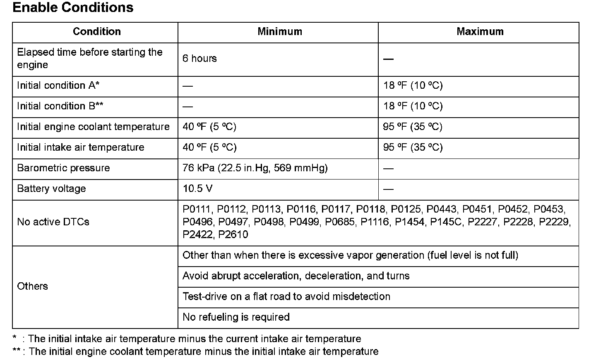

Advanced Diagnostics
DTC P0455: Evaporative Emission (EVAP) System Very Large Leak DetectedGeneral Description
The evaporative emission (EVAP) leak detection system uses an engine off natural vacuum (EONV) method. The EONV method detects leakage from the change in fuel tank pressure via the fuel tank pressure (FTP) sensor with the engine off.
Here is an overview of the malfunction detection for the EONV method:
Step 1: Judgement of detection of 0.09 inch leak as normal operation
Step 2: Judgement of detection of 0.02 inch leak as normal operation
Step 3: Detection of 0.02 inch leak
Step 4: Detection of atmospheric pressure failure
Step 5: Flickering of the FTP sensor
[Step 1, 2 and 3 proceed simultaneously. Step 4 and 5 proceed simultaneously. ]
Step 1:
After the engine has stopped, the powertrain control module (PCM) monitors the variation of the FTP sensor output to detect "no 0.09 inch leak" depending on the variation of the pressure inside the fuel tank.
- If the variation of the pressure is less than a specified value and continues for a specified duration, it is identified as a "0.09 inch leak" and the diagnosis completes.
- If the variation of the pressure is more than a specified value before a specified duration has passed, it is defined as "no 0.09 inch leak", the judgement of detection of a 0.09 inch leak is completed, and it goes to 0.02 inch leak monitor.
Step 2:
After the engine has stopped, the PCM monitors the variation of the FTP sensor output to detect "no 0.02 inch leak" depending on the variation corresponding to the increasing pressure inside the fuel tank.
- If "no 0.02 inch leak" is detected, it is identified as normal; the diagnosis is complete.
- If the pressure inside the fuel tank does not increase a specified value or more within a specified duration, it goes to step 3.
Step 3:
The PCM continues to monitor the FTP sensor output to detect "no 0.02 inch leak" depending on the variation corresponding to the decreasing pressure inside the fuel tank, until the detection completes.
- If a "0.02 inch leak" is detected, it is identified as a malfunction; the diagnosis is complete.
- If "no leakage" is detected, it is identified as normal; the diagnosis is complete.
- If the pressure is not atmospheric pressure or less when the detection is completed, that data is stored and the diagnosis is complete.
Step 4:
After the engine has stopped, the PCM monitors the variation of the FTP sensor output to detect atmospheric pressure, after keeping the canister vent opened for a specified duration to stabilize the pressure inside the fuel tank.
- If the pressure inside the fuel tank after a specified duration has not reached a specified value from the sensor zero point, a canister vent blockage is detected.
Step 5:
After the engine has stopped, the PCM monitors the variation of the FTP sensor output to detect FTP sensor electrical noise failure, after keeping the canister vent opened for a specified time to stabilize the pressure inside the fuel tank.
- If the deviation of pressure inside the fuel tank and an average value after a specified duration has exceeded a specified value for more than a specified duration, an FTP sensor electrical noise failure is detected.
Monitor Execution, Sequence, Duration, DTC Type, OBD Status

Enable Conditions
Malfunction Threshold
The variation of pressure inside the fuel tank is 0.03 kPa (0.009 in.Hg, 0.24 mmHg) or more.
Confirmation Procedure with the HDS
Do the EVAP FUNCTION TEST in the INSPECTION MENU with the HDS.
Driving Pattern
1. After the vehicle has been left for an appropriate amount of time as specified, with the engine coolant temperature and intake air temperature within the specified range, start the engine.
2. Warm up the engine at idle until the radiator fan comes on.
3. Drive the vehicle immediately at a speed between 45 - 75 mph (72 - 120 km/h) for at least 20 minutes.
4. After stopping the engine, turn the ignition switch off, and leave the vehicle for 37 minutes or more (EONV executes).
- Drive the vehicle in this manner only if the traffic regulations and ambient conditions allow.
Diagnosis Details
Conditions for illuminating the MIL
When a malfunction is detected during the first drive cycle with the ECT and IAT at engine start-up within the specified temperature range, a Temporary DTC is stored in the PCM memory. If the malfunction recurs during the next (second) drive cycle with the ECT and IAT at engine start-up within the specified temperature range, the MIL comes on and the DTC and the freeze frame data are stored.
Conditions for clearing the MIL
The MIL will be cleared if the malfunction does not recur during three consecutive trips in which the diagnostic runs.
The MIL, the DTC, the Temporary DTC, and the freeze frame data can be cleared by using the scan tool Clear command or by disconnecting the battery.